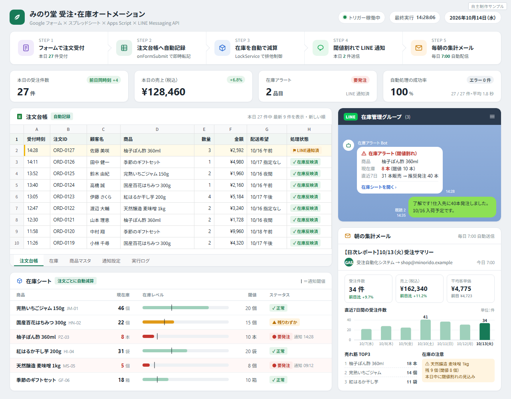
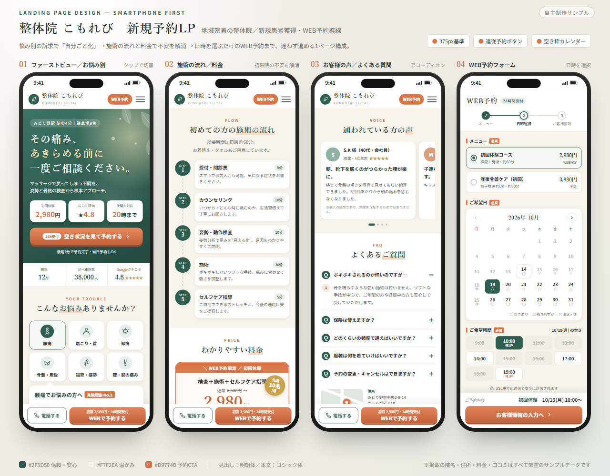
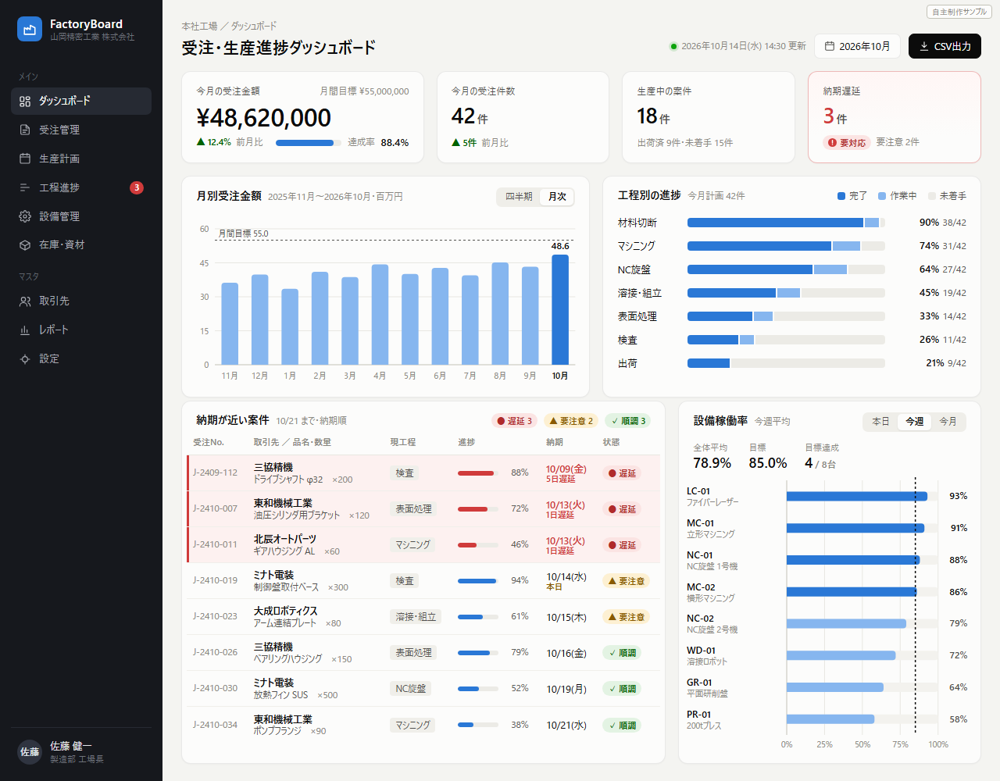

対応できること
金額は目安です。内容をお聞きして、作業範囲と金額を先にお伝えします。
GAS・スプレッドシート自動化
5,000円〜
- フォーム→シート→通知の連携
- 集計・レポートの自動作成
- 毎朝の定時処理・メール送信
API連携・業務ツール
30,000円〜
- EC・通販（eBay・Shopify等）の在庫や注文の同期
- Webデータの収集（規約で許可された範囲）
- ChatGPT / Claude を使った文章処理
LP・業務ダッシュボード
15,000円〜
- スマホ対応のLP（予約・問い合わせフォーム付き）
- 受注・進捗・在庫の見える化
- 公開・設定までサポート
開発実績
実際に作って、運用しているものです。
運用中
eBay輸出の全自動化システム
仕入れ先のAPIから商品情報を取得して出品し、在庫と価格を定期的に同期。注文が入ると仕入れ先へ自動で発注し、追跡番号をeBayへ自動で登録するところまでを一つの仕組みにしました。サーバー上で毎日動いています。
PythonFastAPIPostgreSQLDockereBay API仕入れ先APILINE / Discord 通知
開発実績
製造業向けの業務システム
中小製造業の現場向けに、人事労務（勤怠・従業員管理）、案件管理、生産の見える化ダッシュボードを開発しました。紙とExcelで管理していた情報を、1つの画面で確認できるようにしています。
Next.jsFastAPIPostgreSQLDocker
公開中
比較サイトの制作・運用
動画配信サービスやウォーターサーバーなどの比較サイトを複数制作し、公開・運用しています。
Next.jsVercelSEO
制作サンプル
完成イメージをお伝えするために作った自主制作のサンプルです（掲載のデータはすべて架空です）。

自主制作サンプル
受注・在庫の自動化（GAS）
Googleフォームの注文を台帳に自動記録し、在庫を自動で減算。在庫が少なくなったらLINEで通知し、毎朝集計メールを送ります。

自主制作サンプル
予約につながるLP
悩み別の訴求から、施術の流れ・料金・よくある質問を経て、日時を選ぶだけのWEB予約まで迷わず進める1ページ構成です。

自主制作サンプル
受注・生産進捗ダッシュボード
今月の受注金額、工程ごとの進み具合、納期が近い案件（遅れは赤）、設備の稼働率を1画面で確認できます。
進め方
打ち合わせはチャットのみで完結します。
- 今の作業を教えてください
画面のスクリーンショットや、作業の手順を箇条書きでいただければ十分です。 - 作業範囲と金額をお伝えします
「どこまで自動にするか」「できないこと」を最初に明確にします。 - 完成イメージを確認
テスト用の環境で動きを見ていただき、修正します。 - 納品とマニュアル
画像付きの使い方マニュアルをお付けします。納品後の不具合は無料で修正します。
開発にはAI支援ツールを活用し、短納期で仕上げています。動作確認と品質確認は、納品前に必ず人が行います。
ご依頼・ご相談は、ご覧いただいたサービス（クラウドワークス・ランサーズ・ココナラ）のメッセージからお送りください。
ご依頼・ご相談は、ご覧いただいたサービス（クラウドワークス・ランサーズ・ココナラ）のメッセージからお送りください。